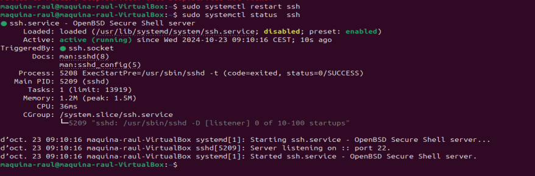
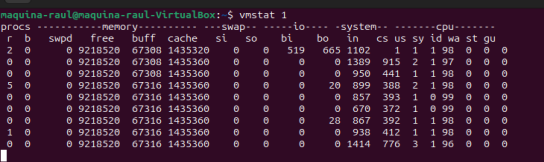
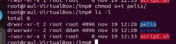

Gestió de la Informació del Sistema i Administració
1. Configuració inicial
Primer de tot, s'ha d'instal·lar Ubuntu Linux en una màquina virtual. Per fer la instal·lació, s'ha d'anar a la pàgina d'Ubuntu per descarregar l'arxiu ".ISO".
Clica l'enllaç i espera que es faci la descàrrega automàticament d'Ubuntu Desktop 24.04.1 LTS
Una vegada estigui la descàrrega, hem d'obrir un programa per crear màquines virtuals. En aquest cas s'utilitzarà VirtualBox.
Afegir i configurar la màquina
En aquest apartat es començarà amb la creació d'una màquina virtual amb l'arxiu descarregat en l'apartat anterior, i es farà la configuració de l'entorn per posar-la en funcionament.
Passos a seguir:
- Obrim VirtualBox i busquem a la part superior el botó "Nova".

- En la següent finestra s'ha de posar el nom de la màquina virtual, i en el camp "ISO image" s'ha de seleccionar l'ISO descarregat al principi de l'article. Fem clic a Endavant.
-
Introduïm el nom d'usuari i la contrasenya, que compleixi amb els requisits que es demanen.

-
S'ha d'introduir la memòria RAM que es vol utilitzar i la quantitat de processos de la CPU que es vol utilitzar. I seguidament introduir la memòria d'emmagatzematge.

Crear i gestionar comptes d'usuari locals
Passarem a veure la creació d'usuaris locals. Per crear-lo s'utilitzarà la comanda adduser:
 Introduïm una S o premem enter per seguir amb la creació:
Introduïm una S o premem enter per seguir amb la creació:

2. Instal·lació de Serveis Essencials
Sempre abans d'instal·lar qualsevol servei és bo assegurar-se que el sistema estigui actualitzat. Per aquest motiu es farà ús de la comanda sudo apt update:
I després fem sudo apt upgrade:
Gestió de Serveis
Un cop instal·lats els serveis, es poden gestionar amb la comanda systemctl. Aquesta comanda pot iniciar, parar o reiniciar serveis.
A continuació un exemple d'aquesta comanda amb el servei SSH:


També podem editar el fitxer de configuració de SSH, obrint-lo amb la comanda sudo nano /etc/ssh/sshd_config per fer els següents canvis:
- Desactivar l'accés del root fent
PermitRootLogin no:

- Per permetre l'accés per contrasenya, fem
PasswordAuthentication yes:
Comprovar Processos en Execució
A vegades cal veure els processos que s'estan executant, per aquest motiu podem accedir a diferents comandes com top, que ens mostra els processos que s'executen en temps real, o podem veure un instantània dels processos executats al realitzar la comanda ps aux, com podem veure a la captura:
 També podem fer una cerca i filtrar el procés que volem buscar amb
També podem fer una cerca i filtrar el procés que volem buscar amb grep:
Una comanda que és molt més útil que les anteriors és htop, que ens mostra tots els processos en execució en temps real, el seu ús de CPU i memòria. La instal·larem amb sudo apt install htop i l'executarem:

Optimitzar l'Ús de Recursos
Es pot comprovar l'ús, en temps real, de la memòria i de la CPU utilitzant vmstat 1:

Si es vol fer una optimització de l'espai quan l'equip està utilitzant un disc de memòria SSD, es pot utilitzar la comanda sudo fstrim -v.
I per tenir una bona optimització del sistema i un correcte funcionament, es recomanable mantenir-lo actualitzat.
- Actualitzar amb
sudo apt update && sudo apt upgrade:
Administrar Serveis Actius Segons les Necessitats del Sistema
Farem una identificació dels serveis actius, llavors, s'haurà d'utilitzar systemctl:
S'ha de revisar els serveis que s'estan executant i determinar si són necessaris.
-
Hem d'aturar els serveis innecessaris. Per aturar-lo s'ha d'utilitzar la comanda
sudo systemctl stop nom_del_servei. -
Si un servei no és necessari en l'arrencada, és millor deshabilitar-lo per evitar que s'iniciï automàticament, amb la comanda
sudo systemctl disable nom_del_servei. -
Si es necessita un servei per a una tasca específica, es pot habilitar temporalment, i s'iniciarà automàticament en l'arrencada. Es farà amb la comanda
sudo systemctl enable nom_del_servei.
3. Usuaris i Grups
-
Per revisar la llista d'usuaris creats al sistema anirem al fitxer
/etc/passwd: -
Per eliminar un usuari de qualsevol grup, només caldrà fer ús de la comanda
deluser nom_usuari nom_grup: -
En aquest punt farem la creació d'un grup. Per realitzar aquesta acció s'ha d'utilitzar la comanda
sudo groupadd nom_grup, i després s'ha de fer una comprovació d'aquest grup amb la següent comanda:getent group | grep nom_grup -
Seguidament s'ha d'afegir un usuari al grup creat o a un altre grup ja existent amb la comanda
sudo usermod -aG nom_grup nom_usuari, aquesta instrucció no retornarà cap missatge. Després es farà una comprovació dels grups als quals pertany l'usuari amb:groups nom_usuari -
També existeix l'opció de crear un usuari dins d'un grup amb la comanda
adduser nom_usuari nom_grup, així seguidament podem comprovar que ara al grupsudotenim dos usuaris:
La primera part de la línia és el nom del grup, després mostra si hi ha una contrasenya associada al grup, que normalment si és unXvol dir que no s'utilitza contrasenya.
Seguidament va amb el número únic assignat al grup, i finalment una llista d'usuaris que són membres del grup. -
Tenim l'opció de canviar la contrasenya de l'usuari amb la comanda
passwd nom_usuari, d'aquesta manera ens demanarà una de nova, sempre mantenint la privacitat de les dades de l'usuari:

-
Si accedim a l'arxiu
/etc/passwd, podrem trobar l'informació bàsica sobre el compte dels usuaris. En una línia podem veure primer de tot el nom de l'usuari que va seguit de la contrasenya que està guardada a l'arxiu/etc/shadow, però en aquesta línia s'emprarà amb unXo*. Després va l'identificador únic de l'usuari junt amb l'identificador del grup al qual pertany (:1002:1002:). Finalment aniria qualsevol informació addicional de l'usuari junt amb el directori personal de l'usuari.
-
Tenim l'arxiu
/etc/shadowque és on es troben les contrasenyes encriptades de cada usuari. La línia està formada pel nom de l'usuari seguit de!o*que vol dir que el compte de l'usuari no pot iniciar sessió en el sistema.
Després, la data en què la contrasenya s'ha canviat per última vegada, seguida dels dies que cal que l'usuari esperi per poder canviar la seva contrasenya.
I finalment mostra el número de dies per avisar a l'usuari que la seva contrasenya expirarà (99999), juntament amb el número de dies que es pot estar inactiu després d'haver-se expirat. -
Ara, ens falta crear el sistema personal d'arxius a l'usuari, per això s'haurà de crear una carpeta amb la comanda
mkdir nom_usuari/carpeta. Però ara el que passa és que aquest directori pertany en permisos a l'usuariroot, llavors amb la següent comanda el que farem serà canviar el propietari i el grup propietari:chown nom_usuari:nom_grup directori
-
Per bloquejar un usuari farem ús de la comanda
usermod -L nom_usuari. Es pot veure que en l'arxiu/etc/shadowhi ha l'usuari, i seguidament el símbol!, això vol dir que està bloquejat.
I per desbloquejar-lo només caldrà executar la comandausermod -U nom_usuari, i podrem veure a l'arxiu anterior que l'exclamació ha desaparegut, així que l'usuari torna a estar disponible.
-
Per eliminar un usuari podem utilitzar la comanda
deluser nom_usuari, però el que farà serà eliminar l'usuari però no el directori personal d'aquest.
En cas de voler eliminar tota la informació i l'usuari de cop, el que s'utilitzarà serà la comandauserdel -r nom_usuari:
-
Per canviar el nom d'usuari utilitzarem
usermod -l nom_nou nom_usuari, però quan fem aquest canvi no es canviarà el nom del directori personal. Per això haurem de fermv directori_antic/ directori_nou/, d'aquesta manera tindrem l'usuari i directori canviats: Però encara falta una cosa, i és que el grup al qual pertany aquest usuari encara no està actualitzat. Llavors, si mirem la informació de l'usuari amb
Però encara falta una cosa, i és que el grup al qual pertany aquest usuari encara no està actualitzat. Llavors, si mirem la informació de l'usuari amb id nom_usuari, podem veure que només s'ha canviat eluidque és el nom, però els grups encara no. Per canviar el nom del grup s'ha d'executar la comandagroupmod -n nom_nou nom_grup.
Finalment ja hauríem canviat el nom de l'usuari correctament.
Definir polítiques de seguretat per a contrasenyes i accessos.
A continuació es farà la configuració de les polítiques de contrasenyes.
El fitxer principal per gestionar les polítiques de les contrasenyes és /etc/login.defs. Aquí és on es poden definir els diversos paràmetres.
- S'ha d'obrir el fitxer amb la comanda
sudo nano /etc/login.defs:
- Seguidament, s'ha de modificar la línia
PASS_MAX_DAYSsi es vol posar un número de dies en què la contrasenya serà vàlida. Igual que aquest camp, també hi ha d'altres. - També es pot modificar la qualitat de les contrasenyes, és a dir, la longitud que poden tenir. Per modificar la longitud mínima, primer s'haurà d'obrir el fitxer on es troben aquestes característiques amb la següent comanda:
sudo nano /etc/security/pwquality.conf
 Busquem on posa
Busquem on posa minlen =, i posem el número mínim de caràcters que pot tenir la contrasenya. Després femCtrl + X,S,Enter.

Configuracions.
Per fer unes configuracions en l'inici de sesio s'Un Usuari de bash haurem d'accedir a diversos fitxers. Aquests fixers els trobarem dints del directori de cada usuari, i per veurels
hem de fer us de la comanda ls -la per mostrar-los ja que estan ocults:

El .bash_logout executa ordres quan es tanca una sessió de Bash.
També tenim el .bashrc que configura l'entorn cada vegada que s'obre una nova terminal de Bash.
I finalment l'arxiu .profile que s'executa quan s'inicia una sessió de login configurant l'entorn global de l'usuari.
Si el que volem fer son unes configuracións com les anteriors però en tots el usuaris que es vagin creant, el que em de fer es modificar els anteriors arxius pero en el directori /etc/skel. I podem veure el seguent:

Farem les configuracións adients en els seguents tres arxius:
.bash_logout:.bashrc:.profile:
4. Permisos
Permisos normals.
El primer de tot es crear els 3 usuaris seguents:
Els pemrisos es mostren de tres en tres, els 3 primers son els usuaris propietaris, els seguents 3 son els del grup propietari, i els 3 finals son el de other que es per altres usuaris.
Si creem un arxiu comenzara amb - i si creem un directori comenzara amb d.
- Lletres dels permisos: r (lectura), w (modificació), x (execucció)

Creem un grup anomenat ddam i hi afegim l'usuari prova2:

Creem una carpeta a tmp i un fitxer anomenat hola. Si mirem els permisos d'aquesta carpeta es pot veure que te els seguents permisos:
- Usuari: Pemrmisos totals
- Grup: Permisos totals
- Altres: Permisos de lectura i execució però no de modificació

L'ordre chgrp s'utilitza per canviar la propietat del grup d'un directori. Si s'utilitza amb l'opció -R l'ordre canvia la propietat de grup de manera recursiva, és a dir, no només per al fitxer o directori especificat, sinó també per a tots els fitxers i subdirectoris dins d'aquest.
Creem el directori proves i el fiquem al grup de ddam:

Ara pertany al grup de ddam:

Amb chmod canvie els permisos sent 7 el permiso total, 5 permis de lectura i execució, 0 sense permisos de cap tipus:

També podem canviar permisos de la següent manera, g+w afegeix permiso de modifcacio al grup propietari i en other afegeix permisos de lectura:
Si donem permisos de modificació i execució, es marcarà de color verd:

Permisos especials.
Podem donar diferents permisos a un directori o carpeta per a un usuari. Per a que cadascú pugui esborrar el que és seu per exemple, i no el dels altres. És fara us de Sticky
- Creem una carpeta
pelisi ufitxerscript.sh`: - Donem permisos d'execució a l'script:

- Afegim un svid (u+s) per fer que l'script sigui executat per diversos usuaris i canviara al color vermell:

- El bit 4 el que vol dir és que quan s'executi el fitxer s'executara amb els permisos del propietari i no de l'usuari en concret:
- Si afegim
ta la carpetapeliel que farà és que tots els usuaris puguin veure el contingut de la carpeta però no poden fer res més a part d'esborrar només el seu:
 - Creem dos fitxers i veiem que des de diferents usuaris només els podem veure, però no podem eliminar el d'un altre usuari, només el que hem creat nosaltres mateixos:
Permisos ACLs
Amb l'ordre getfacl podem veure els permisos dividits per grups i si hi ha algun permís especial aquí el podreu veure:
Prèviament hem creat l'usuari proves3 i ho hem ficat al grup ddam
i l'hi afegim permisos especials amb setfcal, sense permisos en aquest cas, que té més prioritat que el permís de l'usuari que ja tenia. Per veure'ls de nou fem servir la comanda getfacl i a la segona línia surt aquest permís especial.
Si teniu permisos especials es mostra amb el + al final dels diversos permisos.
setfacl -m user:nom_usuari:--- fixer.txt
setfacl -m group:nom_usuari:--- carpeta
setfacl -b fitxer/carpeta
Confirmem que l'usuari prova3 no té permisos de cap tipus ja que no deixa ni entrar a la carpeta:

- Restablim els permisos especials:

5. Particions
Estructura de l'informació
Es refereix a com es organitza i s'emmagatzema la informació dins d'un sistema d'emmagatzematge, com un disc dur o una memòria. Tenim dos conceptes: la fragmentació interna i la fragmentació externa:
Mida sector i mida bloc
-
Mida sector: El sector és la unitat més petita d'emmagatzematge en un disc o sistema d'arxius. És una porció del disc on es poden llegir o escriure dades. Normalment, els sectors tenen una mida de 512 bytes, tot i que també poden ser de 4 KB en discs més moderns.
-
Mida bloc: El bloc és una unitat d'emmagatzematge lògica utilitzada pel sistema d'arxius. Normalment, un bloc és més gran que un sector i la seva mida pot variar depenent del sistema d'arxius (per exemple, 4 KB, 8 KB, etc.). Els arxius es divideixen en blocs per al seu emmagatzematge.
Fragmentació interna
La fragmentació interna es produeix quan un arxiu petit no omple completament el bloc d'emmagatzematge assignat. Per exemple, si un bloc és de 4 KB, però un arxiu només ocupa 1 KB, els 3 KB restants del bloc es queden desaprofitats, la qual cosa provoca un ús ineficient de l'espai.
- Solució: Per evitar la fragmentació interna, es podria fer que els blocs fossin més petits, cosa que permetria aprofitar millor l'espai. Tanmateix, fer els blocs més petits també té inconvenients, ja que podria comportar una major quantitat de blocs que cal llegir i escriure, la qual cosa podria fer que el sistema fos més lent. A més, quan es suprimeix un arxiu, els blocs buits s'han de gestionar, la qual cosa pot disminuir l'eficiència general.
Fragmentació externa
La fragmentació externa succeeix quan un arxiu es divideix en diversos blocs dispersos per tot el sistema d'emmagatzematge, en lloc d'emmagatzemar-se de manera contigua. Això passa quan els arxius es guarden en blocs diferents sense un ordre específic, el que pot alentir l'accés a l'arxiu, ja que el sistema ha de buscar els blocs en diferents parts del disc.
- Solució: La desfragmentació és la tècnica utilitzada per resoldre aquest problema. Consisteix a reorganitzar els blocs dels arxius de manera que s'emmagatzemin de forma contigua, millorant així la velocitat d'accés. Amb les eines de desfragmentació, es pot analitz
Estructura Física
- Mecànica: En discos durs (HDD), l'estructura física és mecànica, amb components mòbils com discs i braços d'accés per llegir i escriure dades.
- Sòlida: En discos de memòria sòlida (SSD), l'estructura és electrònica, sense parts mòbils, utilitzant memòria flash per emmagatzemar dades, amb velocitats d'accés molt més ràpides.
Estructura Lògica
- GPT (GUID Partition Table): És un sistema modern per gestionar particions, amb suport per a discos de més de 2 TB i fins a 128 particions.
- MBR (Master Boot Record): És un sistema antic de 32 bits, amb limitacions de capacitat i nombre de particions (fins a 2 TB i 4 particions).
Per veure quina estructura lògia tenim el que es fara sera executar la comanda gdisk /dev/sda:
Per llistar els discs i particions, farem ús de l'anterior comanda fdisk. Podrem veure tots els sectors de tamany 512 bytes que es la unitat minima fisica on es guarden les dades.

Seguidament observarem el tamany actual del Block que per defecte es de 4096 bytes, es pot cambiar depenet de l'ús. Les dades es guarden en 8 sectors.
A continuació podem veure que un fixer ocupa mes en el sistma operatiu del que pesa el propi fixer ja que el Block te un tamany minim. Creem el fixer hola amb el seu contingut, amb -b veiem el tamany del propi documeny, i amb -sh veiem el que ocupa en el sistema:

Amb la comanda df -T podem veure l'unitat d'enmagatzematge i totes les parts que estan en us:
Per veure tots els dispositius connectats al teu sistema, incloent discs i particions, farem ús de la comanda lsblk:
Primer de tot, per crear una nova partició, farem ús de sudo fdisk /dev/sda, sent sda l'identificador del teu disc:

Seguidament haurem d'escriure n i pressionar enter per crear la nova partició. El sistema preguntarà si es vol crear una partició primària (p) o estesa (e). En aquest cas farem ús d'una partició primària.
Ara, especificarem el número de partició o podem utilitzar el número suggerit per defecte.
Donem enter per tenir el valor per defecte del primer sector. I després definim la mida de la partició en GB, per exemple +20GB, o bé podem pressionar enter per definir la partició amb tot l'espai disponible.
Per verificar la nova partició, s'haurà d'escriure p per llistar les particions i confirmar que s'ha creat correctament. Per guardar els canvis, escrivim w i pressionem enter, això escriurà la nova taula de particions i sortirà de fdisk.

- Finalment, per crear un sistema d'arxius en la nova partició:
sudo mkfs.ext4 /dev/sda3.
Tipus de formateig
-
Format de alt nivell (ràpid):
- Elimina el sistema de fitxers existent, però no borra els arxius.
- Crea una nova estructura del sistema de fitxers, però les dades poden ser recuperades.
-
Format normal:
- Elimina el sistema de fitxers i marca els sectors defectuosos.
- Els arxius desapareixen, però es poden recuperar fins que es sobreescriguin.
-
Format de baix nivell (lent):
- Borra tots els dades de manera exhaustiva, com si el disc fos nou.
- És el procés més lent i elimina tot el contingut del disc.
Què és un sistema de fitxers?
Un sistema de fitxers organitza i gestiona els fitxers en un dispositiu d'emmagatzematge (com un disc dur o SSD). Depèn de les particions del disc i defineix com es desar les dades, com s'hi accedeix i com es gestionen els noms i permisos dels fitxers.
Exemples comuns:
- ext4 (Linux)
- NTFS (Windows)
- FAT32 (sistemes més antics)
- Btrfs, XFS (per a tasques avançades)
Apuntadors i gestió dels fitxers
-
Inode: Cada fitxer té un inode que guarda la informació del fitxer (com permisos, mida i ubicació de les dades), però no el nom.
-
Directoris: Són taules que vinculen els noms dels fitxers amb inodes específics.
-
Apuntadors a blocs de dades: Els inodes contenen apuntadors als blocs de dades on es desar el contingut real del fitxer. Per a fitxers grans, s'utilitzen apuntadors dobles o triples.
Implementar Còpies de Seguretat Automàtiques
Les comandes que es poden utilitzar són les següents:
-
rsync: Per crear còpies de seguretat. Les còpies es faran a un altre directori.
Per exemple, podem fer una còpia del directori/home/raul2/prova/al directori/home/raul/prova2, (la barra/indica que es copiaran només els continguts del directori). Llavors aquesta còpia la farem de la següent manera:
-
cron: Per programar tasques automàticament.
Per exemple, si es vol fer una còpia de seguretat diària a les 2 AM, llavors editarem elcrontab: